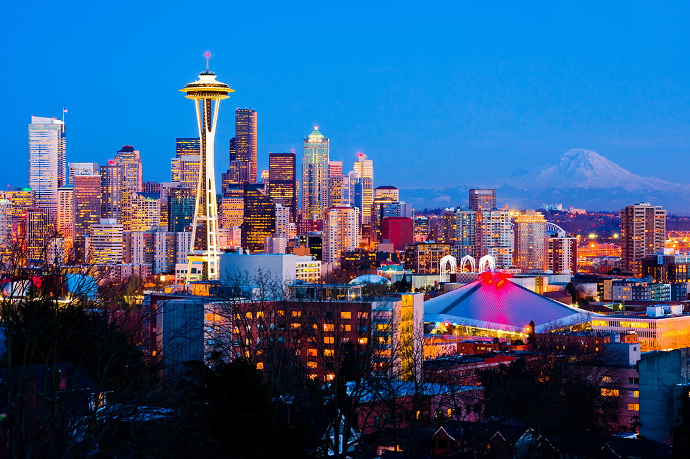

About Seattle
Population: 724,745
Year Incorporated: 1869
Region: Western Washington
Classification: Urban
Average Income Level: Higher than the state average
Demographic Information
| Year | Population | Median Income | Unemployment Rate |
|---|---|---|---|
| 2010 | 608,660 | $67,365 | 8.3% |
| 2015 | 684,451 | $76,612 | 5.0% |
| 2020 | 724,745 | $85,935 | 3.4% |